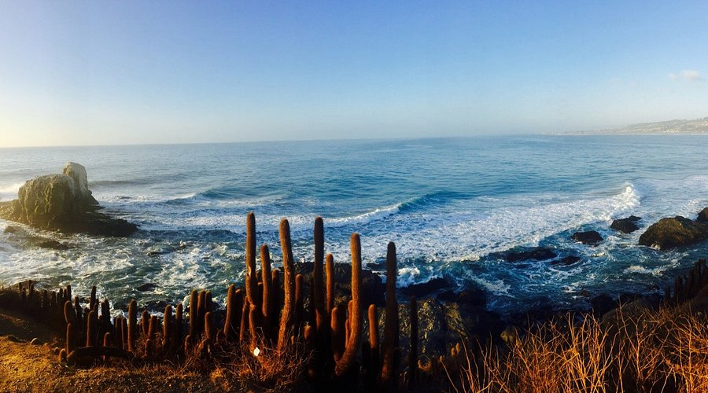
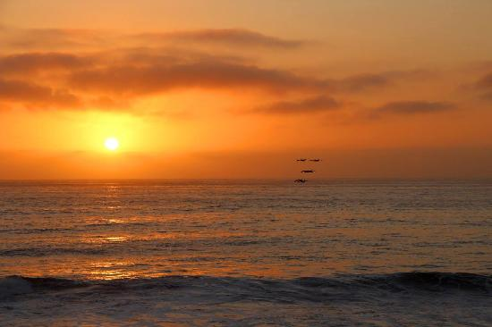
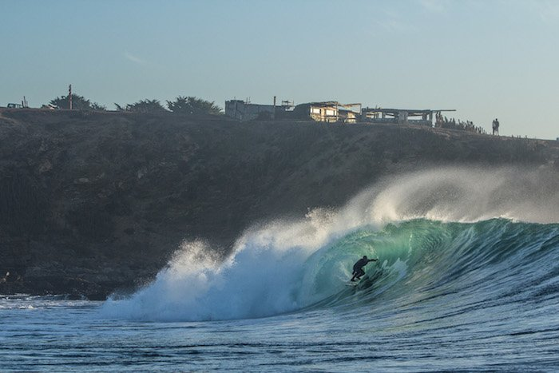
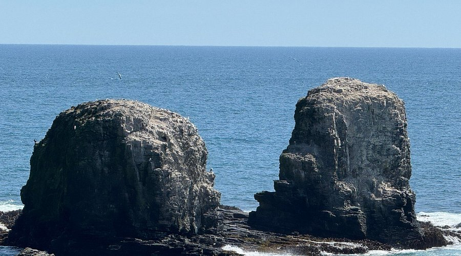

📖 Historia de Punta de Lobos
Punta de Lobos es uno de los destinos más emblemáticos de la costa chilena, reconocido internacionalmente por sus olas gigantes ideales para el surf. Su nombre proviene de las colonias de lobos marinos que habitan los roqueríos cercanos. Durante años fue un lugar conocido principalmente por pescadores locales, hasta que comenzó a atraer surfistas de todo el mundo.
🌎 Sobre Pichilemu
Pichilemu es una ciudad costera ubicada en la Región de O'Higgins y es considerada la capital del surf en Chile. Su desarrollo como balneario comenzó a finales del siglo XIX, convirtiéndose en un destino turístico clave gracias a sus playas, su cultura relajada y su gastronomía basada en productos del mar.
🏄 Actividades
Surf de nivel mundial 🌊
Caminatas por acantilados 🚶
Fotografía y atardeceres 📸
Gastronomía local 🍽️
📍 Información útil
Mejor época: todo el año (invierno ideal para surf)
Clima: costero, con viento frecuente
Ubicación: a pocos minutos al sur de Pichilemu
Clima: costero, con viento frecuente
Ubicación: a pocos minutos al sur de Pichilemu
📸 Galería



